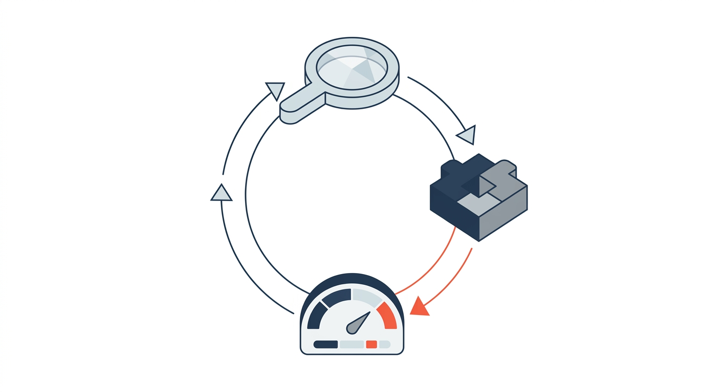

Le Studio IA+ : clarifier où commencer, réaliser ensemble et mesurer ce qui compte.The AI+ Studio: clarify where to begin, deliver together and measure what matters.
Nos experts en processus et en transformation évaluent votre organisation, identifient l'impact concret de l'IA dans votre secteur, et bâtissent une feuille de route priorisée selon la valeur et le retour sur investissement — en tenant compte de vos obligations et des normes de votre secteur. Ensuite, nous réalisons — avec notre plateforme comme moteur.Our process and transformation experts assess your organization, identify AI's concrete impact in your sector, and build a roadmap prioritized by value and return on investment — accounting for your obligations and your sector's standards. Then we deliver — with our platform as the engine.
De l'analyse à la réalisation, en trois temps.From analysis to delivery, in three moves.
Une méthode claire, pensée pour réduire le risque et prouver la valeur avant les grands investissements.A clear method, designed to reduce risk and prove value before any large investment.
DiagnostiquerDiagnose
Comprendre vos enjeux, vos données et vos risques. Voir clair avant d'investir, avec une lecture honnête de votre maturité IA.Understand your challenges, data and risks. See clearly before investing, with an honest read of your AI maturity.
PrioriserPrioritize
Une feuille de route classée par valeur et faisabilité, chaque opportunité chiffrée avec ses bénéfices attendus.A roadmap ranked by value and feasibility, with each opportunity quantified by its expected benefits.
Réaliser et mesurerDeliver & measure
Livrer les initiatives avec notre plateforme, puis suivre les résultats avec des KPI clairs.Deliver the initiatives with our platform, then track results with clear KPIs.

Un accompagnement dans la duréeSupport over time
Diagnostiquer, réaliser, mesurer — puis recommencer. Chaque cycle rend le suivant plus rapide et plus rentable.Diagnose, deliver, measure — then start again. Each cycle makes the next one faster and more profitable.
Trois façons d'avancer avec nous.Three ways to move forward with us.
Diagnostic IA+AI+ Diagnostic
Une évaluation structurée de votre maturité IA et de vos opportunités, livrée sous forme de feuille de route priorisée.A structured assessment of your AI maturity and opportunities, delivered as a prioritized roadmap.
- Cartographie de vos processus à fort potentielMapping of your high-potential processes
- Opportunités chiffrées, classées par valeur et par ROIQuantified opportunities, ranked by value and ROI
- Prise en compte de vos obligations et des normes de votre secteurAccounts for your obligations and your sector's standards
- Repérage des programmes de financement applicables (subventions, crédits d'impôt)Identification of applicable funding programs (grants, tax credits)
- Prochaine étape concrète, prête à lancerA concrete next step, ready to launch
Studio IA+AI+ Studio
Notre équipe conçoit, développe et déploie vos solutions d'IA, en s'appuyant sur la plateforme Newco comme moteur de réalisation.Our team designs, builds and deploys your AI solutions, using the Newco platform as the delivery engine.
- Conception et développement sur mesureCustom design and development
- Blocs réutilisables : plus rapide, moins coûteuxReusable blocks: faster, cheaper
- Intégration à vos systèmes existants : SharePoint, bases de données, APIIntegration with your existing systems: SharePoint, databases, APIs
- Validation humaine et gouvernance intégréesHuman validation and governance built in
Trajectoire IA+ 360AI+ Trajectory 360
Un accompagnement continu qui industrialise vos gains, gouverne vos agents IA et ouvre chaque nouveau cycle de valeur.Ongoing support that industrializes your gains, governs your AI agents and opens each new value cycle.
- Suivi des résultats et des KPI dans le tempsTracking of results and KPIs over time
- Gouvernance et conformité de vos agents IAGovernance and compliance of your AI agents
- Conformité des livrables validée par l'IA (ISO, réglementation, politiques)AI-validated deliverable compliance (ISO, regulations, policies)
- Valeur récurrente, cycle après cycleRecurring value, cycle after cycle
Vos enjeux évoluent. Vos livrables devraient évoluer eux aussi.Your challenges evolve. So should your deliverables.
Nos diagnostics, feuilles de route et rapports ne dorment pas dans un répertoire partagé : ce sont des outils vivants, interactifs et connectés, qui se mettent à jour, suivent l'avancement, mesurent les bénéfices et déclenchent le prochain cycle d'amélioration.Our diagnostics, roadmaps and reports don't sleep in a shared drive: they are living, interactive, connected tools that update themselves, track progress, measure benefits and trigger the next improvement cycle.
Diagnostic et réalisation, sous un même toit.Diagnosis and delivery, under one roof.
Les affaires avant la technologieBusiness before technology
Nous partons de vos enjeux et de la valeur visée, jamais de la mode technologique.We start from your challenges and target value, never from tech hype.
La preuve avant la promesseProof before promise
La valeur est démontrée étape par étape, avant tout investissement majeur.Value is proven step by step, before any major investment.
Une équipe, pas des intermédiairesOne team, no hand-offs
Nous diagnostiquons, concevons, développons et faisons évoluer, sans passer le relais.We diagnose, design, build and evolve, without passing the baton.
Une plateforme qui accélèreA platform that accelerates
Nos blocs réutilisables réduisent les délais, les coûts et les risques de chaque projet.Our reusable building blocks cut the time, cost and risk of every project.
Newco Studio mobilise un écosystème de spécialistes et de partenaires selon les besoins de chaque projet.Newco Studio taps a network of specialists and partners as each project requires.
Quelle opportunité d'IA devrait être priorisée chez vous ?Which AI opportunity should you prioritize first?
Une première discussion suffit pour clarifier votre contexte et identifier la prochaine étape concrète.A first conversation is enough to clarify your context and identify the next concrete step.